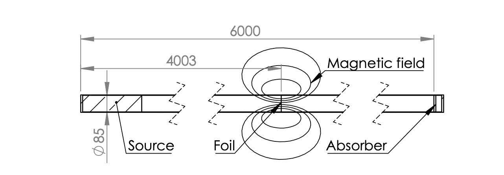

Neutron Precise-High Measurements
Some of the challenges of High Energy Physics experiments are related to improve the sensitivity of the detectors, data transfer velocity, trigger capabilities and other physical limitants for our current technologies. The neutrons are very interesting particles to study due their importance in the baryonic matter construction, the free neutron lifetime puzzle and the EDM because of its null measured electric charge.
Reported neutron parameters in PDG
Find below some of the most important parameters of neutron extracted from PDG.
- Lifetime:
- Mass:
- Magnetic Moment :
- Electric Dipole Moment:
Complete list of neutrons parameters:
Simulations
As reviewed in the n2EDM documentation, the package developed by the nEDM collaboration to simulate a full cycle of the experiment is the Monte Carlo Ultracold Neutron (MCUCN). MCUCN is not public available, so I looked for other UCN Monte Carlo generators. PENTrack tool is used to simulate the PENeLOPE experiment. This experiment aims to measure the neutron's lifetime with better precision. I used PENTrack to simulate ultracold neutrons storaged in the chamber, with the magnet ramped and without it.
PENTrack
The PENTrack package simulate the PENeLOPE experiment. The detectors and relevant surrounding materials are simulated by adding STL files with the proper sizes, dimensions and forms. PENTrack share some of the setup with n2EDM because these 2 experiments use the ultracold neutron method. Some of the STL files are:
- Storage chamber
- UCN Polarizer
- Magnet
- Proton Detector
- Absorbers for High Field Seekers (HFS)
STL Images of the experiment setup
Brief description of PENTrack simulation:
- The UCN chamber is filled for 200 s.
- The spectrum of UCN is cleaned for 200 s.
- The magnet is ramped for 100 s from 0 T to 0.1
- Magnet is on for 300 s, it can be on up to 5000 s. The proton counter is activated.
- Magnet is turned of gradually for 100 s.
- The remaining UCN are counted for 200 s.
Characteristics of the simulations
Following the PENTrack documentation, two types of simulations were considered. The PENTrack Benchmark and the full cycle PENeLOPE experiment. All the simulations were done in a local cluster created with an ASUS Vivobook X510U computer running Ubuntu Server 22.04.
Full cycle PENeLOPE experiment
Some of the parameters changed to run the simulation can be find in the config.in file in PENTrack/in directory.
- Number of UCN generated: 3,000.
- Total amount of seconds to be simulated for each neutron: 6,000 s.
- Active time of UCN source: 200 s.
- The UCN pulse gap and width are 0. It denotes the UCN source is active the 200 s without any interruption.
- Magnetic ramp starts at 400 s. It longs 200 s. It ramps back at 700 s.
PENeLOPE Benchmark
The parameters changed to run the simulation are:
- Number of UCN generated: 10,000.
- Total amount of seconds to be simulated for each neutron: 1,000 s.
- Only the PENeLOPE Benchmark (BenchmarkGeom-production_vol-1.STL) pointed above is used in the simulation.
Data Analysis
PENTrack has the options to get the output of the simulation in ROOT format. With the output file in ROOT format the analysis can be done with the ROOT Framework. Every time the simulation is completed, an out.root file is created in out directory. The initial and final value of positions, velocities, magnetic, electric magntides and spins for each coordinate, energy, time, polarization and many more are created in the out.root files. The analysis for both simulations is described below.
-
Full cycle PENeLOPE
- Only 3,000 events were simulated due the insuficient computational resources: The imposibility to simulate more events limited the accuracy of the results.
- All the STL files available for PENTrack were considered in the simulation. The default active time for each file is used.
- Considering the importance of the LFS, this condition is used to visualize them in xz plane after the magnet is activated. Approximately at time = 500 s.
- The initial and last energy is plotted to visualize the impact of the energy in the system after the full cycle is completed.
- The output file can be downloaded here: out.root file.
-
PENTrack Benchmark
- The PENTrack Benchmark simulation is only considering one STL file. A squematic view of the system is: 
- Counting the LFS and High Field Seekers (HFS) by every bin of distance from the UCN source. Most of the neutrons will be lost on the foil, approximately at 4 m from the absorber barrier for HFS at 6 m.
- The output file can be downloaded here: out.root file.
Results
Full cycle PENeLOPE
- After the magnet is turned on at 200 s, the energy of UCNs decrease.
- This plot is considering the 3,000 UCN simulated. The end energy of the UCNs is plotted.
- The polarization is used to filter the UCNs as LFS or HFS.
- This plot could show interesting results if the simulation had more data. More cuts could be done as counting: the UCNs after the magnet is on. Currently, all the UCNs end before 250 s.
- Simulating sets of UCNs of 100, 1,000 and 3,000 a huge increment of computational resource was noted. In the first case, it took less than a minute, for 1,000 UCN it took around 10 min, and for 3,000 UCN it took more than 2 hours.
PENeLOPE Benchmark
- LFS are the interesting UCNs for PENeLOPE experiment, because with this polarization the neutrons will stay inside the magnetized chamber. On the other case, the HFS will be atracted to the chamber and absorbed.
- LFS are two order of magnitud greater than the HFS, because HFS travels through through all the guide to reach the foil at 4 m and the absorber at 6 m.
- In this case, the 10,000 UCNs were enough to visualize the proper distribution for the UCNs in side the PENeLOPE benchmark.